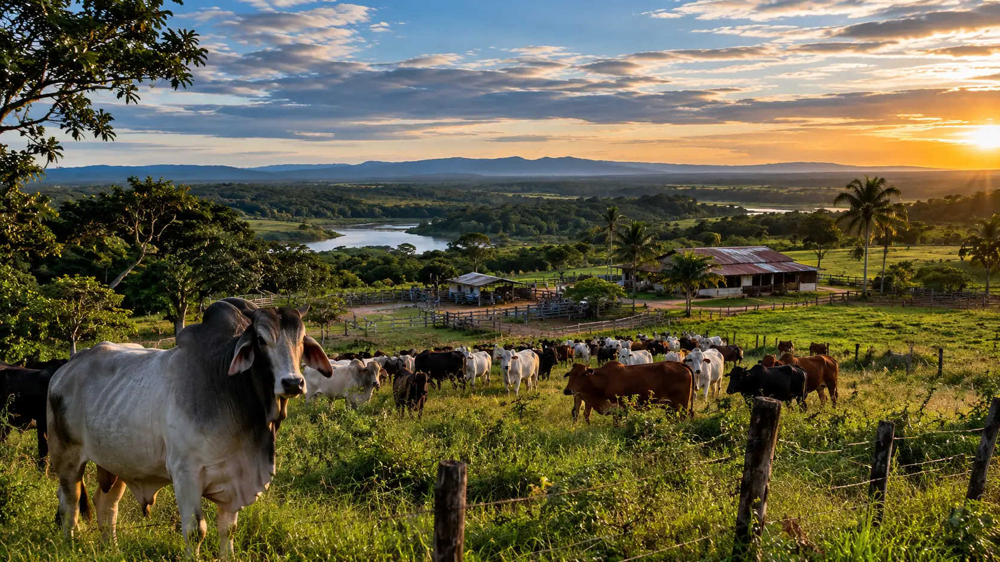
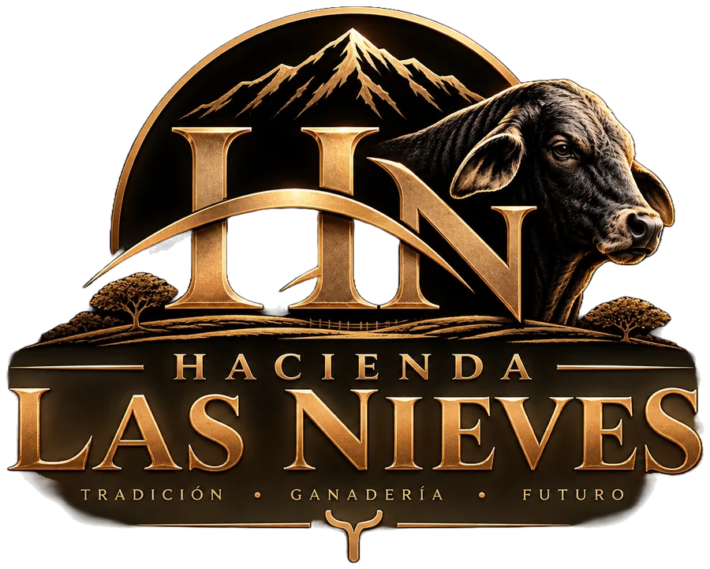
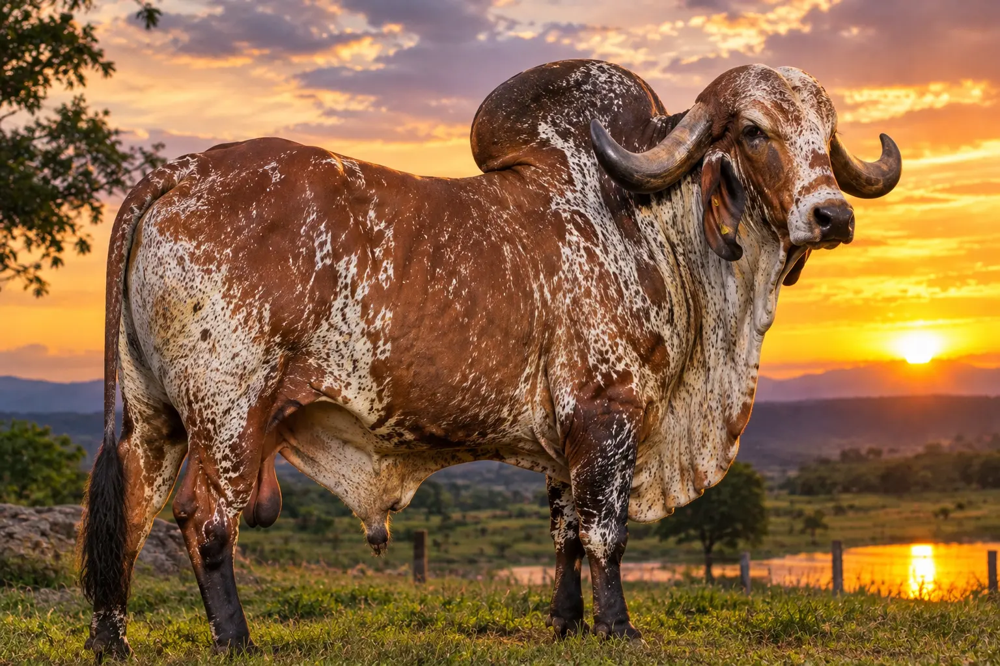
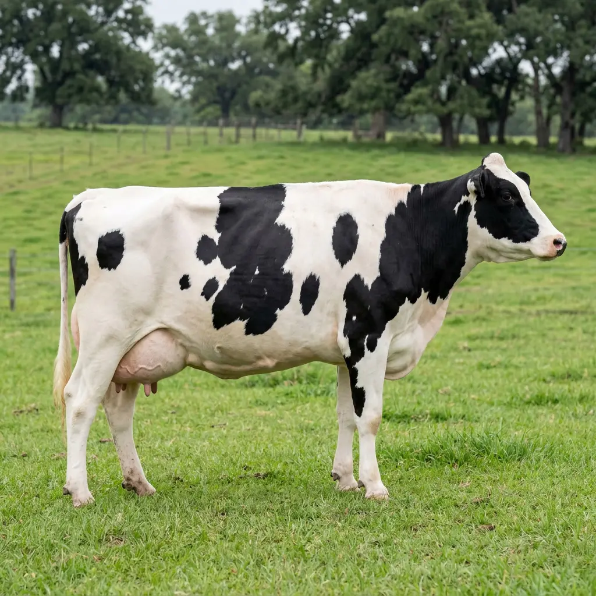
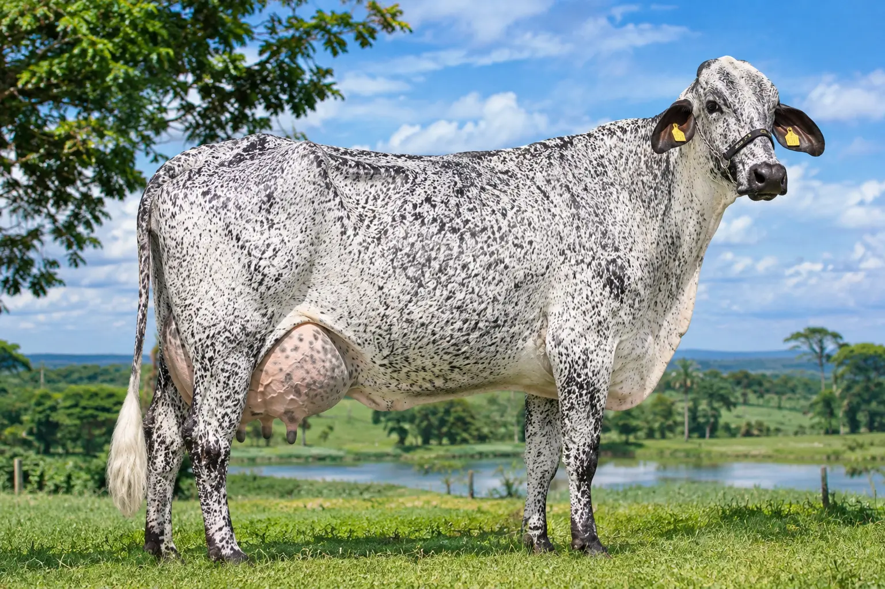

150ha
Extensión de la hacienda


Un proyecto ganadero en las Sabanas del Yarí, San Vicente del Caguán, Caquetá, que integra tierra, forrajes, genética, reproducción y tecnología. Nuestra línea principal es el Girolando Plus.
150ha
Extensión de la hacienda
50cabezas
De ganado
15años
De trayectoria
48L/vaca/día
Meta productiva genética
La Finca
Las Nieves no es un nombre cualquiera. Honra a mi abuela, María de las Nieves Ruiz. Y honra también a las Girolando Plus, esas vacas de pelaje jaspiado cuyo lomo parece cubrirse de nieve cayendo.
La ganadería viene por tradición y herencia pura de familia: los Rueda, generaciones enteras han criado ganado en las llanuras de Arauca y la Orinoquía. Por la familia de mi padre, los Lizcano, la vida también ha estado cerca del campo. De ahí viene esta vocación: no se aprende, se hereda.
San Vicente del Caguán es el lugar donde crecí y estudié. Mi abuelo, Julio César Rueda, fue docente allí durante casi toda su carrera, aunque su infancia y adolescencia las vivió en el campo. La familia Rueda es conocida en el pueblo por él. Ese vínculo con la tierra y con la gente es parte de lo que somos.
Hoy, en las Sabanas del Yarí, trabajamos 150 hectáreas propias con un propósito claro: construir una ganadería tropical eficiente, adaptada al trópico, basada en la integración de tierra, forrajes, nutrición, genética, reproducción y transformación. No compramos animales para revender: hacemos genética de alto nivel. Desarrollamos un sistema completo.
La línea principal es el Girolando Plus, respaldada por quince años de experiencia ganadera que hoy se concentran aquí. Esa es la dirección: seleccionar animales funcionales, fértiles, longevos, que produzcan bien y duren. Ganadería que se sostiene en el tiempo.
Genética
Trabajamos con razas que combinan adaptación, rusticidad y capacidad productiva. La base es el Gyr; la potencia lechera viene del Holstein. El resultado, nuestra línea Girolando.

Adaptación tropical
Raza cebuína de origen indio. Aporta rusticidad, tolerancia al calor, capacidad reproductiva y longevidad. Es la base de todo nuestro programa de mejoramiento genético.

Producción lechera
La raza lechera más productiva del mundo. Aporta capacidad lechera, conformación de ubre y estructura. La combinamos con Gyr para lograr animales adaptados al trópico sin perder producción.

Gyr + Holstein
El cruce que combina lo mejor de dos mundos: adaptación tropical más capacidad lechera. Nuestra línea se selecciona avanzando hacia 5/8 Holstein, conservando la rusticidad del Gyr.